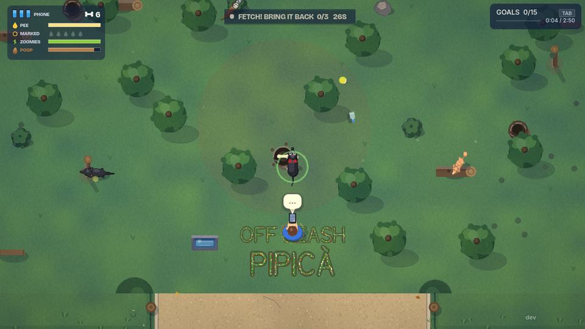

El Parc
The city park
Gravel walks, clipped hedges, park benches and a fenced duck pond where stray tennis balls keep drifting out of reach. A calm green shortcut away from delivery scooters, so long as nobody sends your ball into the water.
- Off-leash stop
- PIPICÀ (Fenced dog yard)
- Beat the clock
- Under 2:50
Screenshots



Goals (15)
- Mark 5 spots
- Have 4 good long sniffs
- Get the phone home without a scratch
- Get yourself home without a bump
- Get your business bagged
- Bring the ball back 3 times
- Bring Tofu the cat home
- Say hello to 3 dogs
- Have a good long drink
- Scarf down 2 dropped snacks
- Land an x3 trick combo
- Fetch the ball from the middle of the pond
- Spell LEASH
- Find the hidden pernil
- Beat the clock (under 2:50)